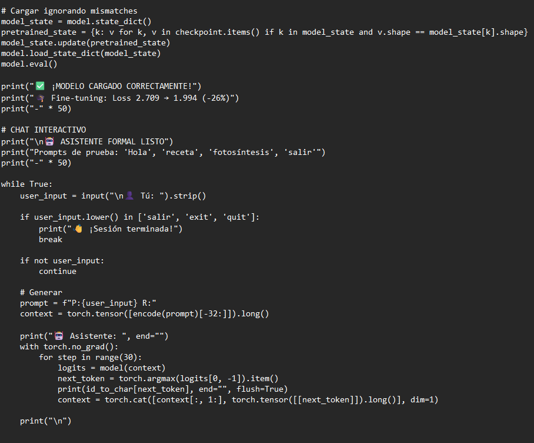
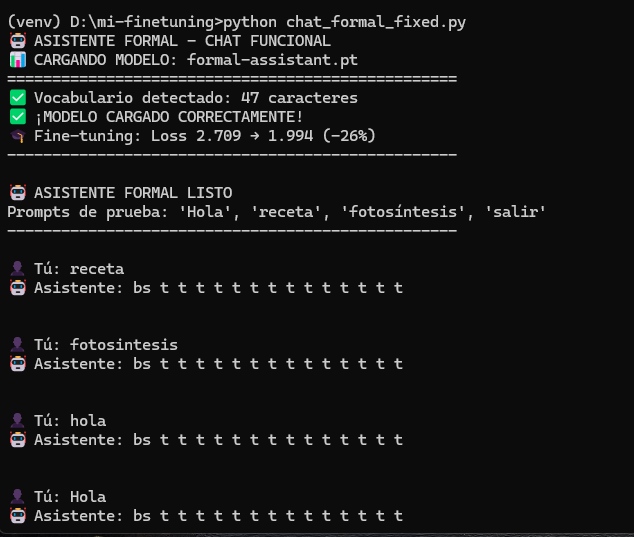
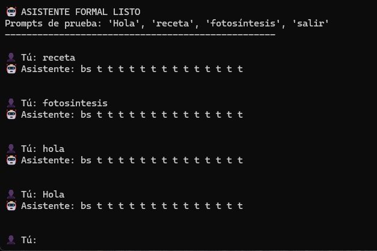

📄 Dataset Curado
8 ejemplos formales diseñados para entrenar un asistente educado y profesional.
Proyecto práctico IA ASIR - Transformer desde cero
8 ejemplos formales diseñados para entrenar un asistente educado y profesional.


Vocabulario reducido y control total sobre generación carácter por carácter.
Modelo MLP residual con 10 épocas completadas y reducción significativa del error.

Generación autoregresiva token-por-token funcionando correctamente.